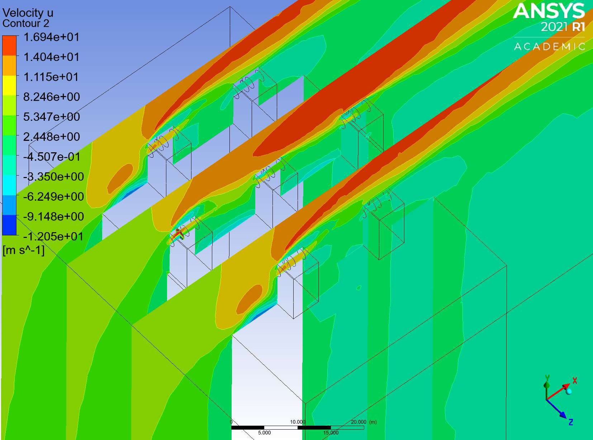

Projects
The multi-tool build is the work I would want to be judged on. The CFD study is my MSc dissertation, and shows the analysis side of my work.

Classic SD multi-tool
SELF DIRECTED, 2026 · SOLIDWORKS · 16 PARTS · GA + 4 DETAIL DRAWINGS TO BS 8888 · 3D PRINTED PROTOTYPE
A 58 mm multi-tool taken from the physical product to a finished parametric assembly. All 16 parts modelled, both spring configurations built, a general assembly with BOM and four detail drawings toleranced to BS 8888, and a 3D printed prototype to check fit and motion.
READ THE CASE STUDY →

Rooftop wind farm CFD
MSc DISSERTATION, KINGSTON UNIVERSITY, 2025 · ANSYS CFX · SUPERVISOR DR KONSTANTIN VOLKOV
CFD study comparing hexagonal and row-column turbine layouts on a 200 m high rise. The hexagonal layout won on power output at every resistance coefficient tested, at the cost of two fewer turbines fitting the roof.
READ THE CASE STUDY →